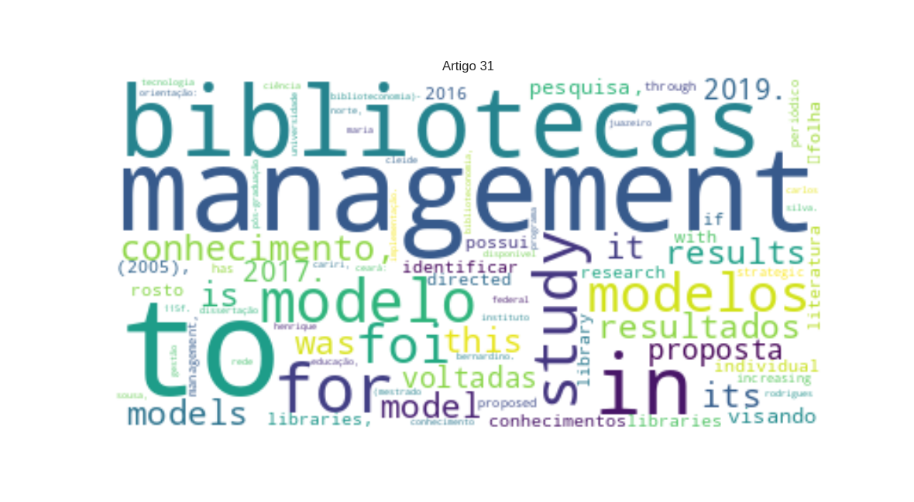

31 - SOUSA, Carlos Henrique da S._Gestão do conhecimento na Rede de Bibliotecas do IFCE_uma proposta de implementação.txt

SOUSA
MISC
,
Carlos Henrique da Silva
PER
.
Gestão
PER
do conhecimento na rede de bibliotecas do
Instituto Federal de Educação, Ciência e Tecnologia do Ceará
LOC
: uma proposta de implementação. Orientação:
Maria Cleide Rodrigues Bernardino
PER
. 2017. 115f. Dissertação (
Mestrado
LOC
em Biblioteconomia)-
Programa de Pós-Graduação em Biblioteconomia
MISC
,
Universidade Federal do Cariri
LOC
,
Juazeiro do Norte
LOC
, 2017. Disponível em: http://sites.ufca.edu.br/ppgb/wpcontent/uploads/sites/20/2019/06/Disserta%C3%A7%C3%A3o_SOUSA_Gest%C3%A3o-do-conhecimento-na-rede_2017.pdf Acesso em: 29 dex. 2019.
Carlos Henrique da Silva Sousa
PER
Este estudo aborda a gestão do conhecimento como modelo gerencial, verificando se as ações da rede de bibliotecas de um
Instituto Federal
LOC
, especificamente no âmbito de seu sistema de bibliotecas, estão voltadas a essa prática organizacional. Como problema de pesquisa, busca-se confirmar se a gestão do conhecimento promove uma gestão mais integradora no que tange ao compartilhamento do ativo de conhecimento existente, visando à construção de novos conhecimentos e ao aumento da capacidade de resposta às demandas institucionais na rede de bibliotecas do
Instituto Federal do Ceará
LOC
. O objetivo geral é estabelecer um modelo de gestão do conhecimento para a rede de bibliotecas do
Instituto Federal do Ceará
LOC
. E os objetivos específicos são baseados em: identificar e analisar os principais modelos de gestão do conhecimento existentes na literatura nacional e internacional; verificar as ações voltadas à gestão do conhecimento na rede de bibliotecas do
Instituto Federal do Ceará
LOC
; e elaborar um modelo conceitual de gestão do conhecimento aplicado à rede de bibliotecas do
Instituto Federal do Ceará
LOC
. Para tanto, a pesquisa caracteriza-se como descritiva, exploratória, de cunho qualiquantitativa, valendo-se do estudo de caso de um sistema de bibliotecas de uma instituição de ensino superior. Por meio das técnicas de coleta de dados (revisão de literatura, observação direta e aplicação de questionário), foi possível identificar seis modelos de gestão do conhecimento, optar por um deles, adaptá-lo e inquirir os gestores das bibliotecas sobre as ações de gestão do conhecimento em seu sistema de bibliotecas. Com os dados coletados, foi utilizado o
Microsoft Excel 2016
MISC
para a tabulação, a geração de gráficos e a avaliação estatística das respostas objetivas. A análise e interpretação dos dados ocorreram mediante a técnica de análise de conteúdo categorial, em que as categorias e subcategorias verificadas no estudo são adaptações referentes aos elementos e requisitos para a gestão do conhecimento em bibliotecas universitárias, propostas por
Castro
LOC
(2005), buscando averiguar o perfil dos respondentes, a gestão estratégica da biblioteca, os processos de gestão do conhecimento e os suportes organizacionais. Os resultados obtidos indicam que o sistemade bibliotecas em estudo possui iniciativas incipientes de gestão do conhecimento, necessitando com urgência formalizar seus processos, alinhar o planejamento estratégico às práticas de gestão do conhecimento, mapear seus conhecimentos e competências, bem como desenvolver procedimentos e metodologias que facilitem esse trabalho. A partir dos resultados encontrados, um modelo de gestão do conhecimento foi proposto para a rede de bibliotecas do
Instituto Federal do Ceará
LOC
. Com base na fundamentação teórico-empírica e nos resultados da pesquisa, fica evidente a importância que a temática possui no contexto das organizações, revelada através de diferentes conceitos, teorias e modelos registrados na literatura científica, que procuram constantemente explicar o gerenciamento do conhecimento em qualquer ambiente organizacional e a transferência do conhecimento individual para o conhecimento organizacional, visando ao aumento de competitividade e inovação.
RESUMO DE DISSERTAÇÃO Gestão do Conhecimento
MISC
na
Rede de Biblitoecas do
ORG
Instituto Federal de Educação, Ciência e Tecnologia do Ceará
LOC
: uma proposta de implementação �folha de rosto em
Biblioteconomia e Ciência da Informação Palavras-Chave: Gestão do Conhecimento
MISC
.
Rede de Bibliotecas
MISC
.
Sistema de Bibliotecas
MISC
.
Instituto Federal do Ceará
LOC
(
IFCE
ORG
).
Knowledge Management in the Ceará Federal Institute of Education
PER
,
Science and Technology Library Network
MISC
: a proposal for implementation This study deals with knowledge management as a managerial model, verifying if
the actions of
MISC
the network of libraries of a Federal Institute, specifically within its system of libraries,
are directed to
PER
this organizational practice. As a research problem,
it is sought to confirm if knowledge management
MISC
promotes a
more integrative management regarding
PER
the sharing of
MISC
existing
knowledge assets
PER
,
aiming at building new knowledge and increasing the capacity to respond to institutional demands in
ORG
the library network of the Federal Institute of Ceará. The general objective
is to establish
MISC
a knowledge management model
for the library network of the Federal Institute of Ceará
MISC
.
And the specific objectives are based on: identifying and analyzing the main models of knowledge management
MISC
existing in
the national and international literature
ORG
;
verify the actions directed to the knowledge management in the library network of the Federal Institute of Ceará
MISC
; and to elaborate a conceptual model of knowledge management
applied to the library network of the Federal Institute of Ceará
MISC
.
In
MISC
order to do so,
the research is
MISC
characterized as descriptive, exploratory, and qualitative, using a case study of a library system of a higher education institution. By
means of data collection techniques
MISC
(literature review,
direct observation and questionnaire application
MISC
),
it was possible to identify six models of knowledge management
MISC
, to choose one of them, to adapt it and to inquire the managers of the libraries about the management actions of knowledge in your Library System.
With the data collected
MISC
,
Microsoft Excel
MISC
2016 was used for tabulation,
generation of graphs and statistical evaluation of
MISC
objective responses.
The analysis and interpretation of the data occurred through the technique of categorical content analysis
MISC
,
in which the categories and subcategories verified in the study are adaptations referring to the elements and requirements for knowledge management in university libraries
MISC
, proposed by
Castro
PER
(2005), seeking to find out the profile of the respondents,
the strategic management of the library
ORG
,
the processes of knowledge management and organizational support
MISC
.
The results indicate that the
MISC
Library System under study has incipient initiatives of knowledge management, urgently
requiring formalization of its
MISC
processes,
aligning
PER
strategic planning
with knowledge management
PER
practices,
mapping its knowledge and skills
ORG
, as well as developing procedures and methodologiesthat
Facilitate
PER
this work.
From the results found
MISC
, a knowledge management model was proposed for
the library network of the Federal Institute of Ceará
MISC
.
Based on the theoretical-empirical foundation and the results of the research
MISC
,
the importance that the thematic has in the context of the organizations
MISC
,
revealed through different concepts
MISC
, theories and models registered in the scientific literature,
that constantly seek to explain the management of knowledge in any
PER
organizational environment and the transfer of individual knowledge to organizational knowledge, aiming at increasing competitiveness and innovation.
Keywords
PER
:
Knowledge Management
PER
.
Network of Libraries
MISC
.
System of Libraries
ORG
.
Instituto Federal do Ceará
LOC
(
IFCE
LOC
). 47 v. 5,
n. 1
MISC
., p. 46-48, jan./jun, 2019. �folha de rosto em
Biblioteconomia e Ciência da Informação Este
MISC
trabalho está licenciado com uma
Licença Creative Commons
MISC
- Atribuição-NãoComercial-CompartilhaIgual 3.0
Brasil
LOC
.
Periódico de Acesso Aberto
LOC
Centro de Ciências Sociais Aplicadas Mestrado Profissional em Biblioteconomia Este periódico é uma publicação do
Programa de Pós-Graduação em Biblioteconomia da Universidade Federal do Cariri
MISC
em formato digital e periodicidade semestral. 48 �